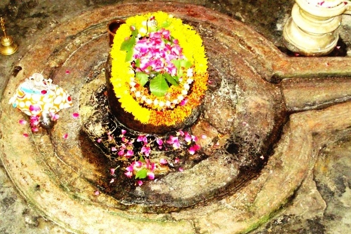

<?xml version="1.0" encoding="UTF-8"?><rss version="2.0"
	xmlns:content="http://purl.org/rss/1.0/modules/content/"
	xmlns:wfw="http://wellformedweb.org/CommentAPI/"
	xmlns:dc="http://purl.org/dc/elements/1.1/"
	xmlns:atom="http://www.w3.org/2005/Atom"
	xmlns:sy="http://purl.org/rss/1.0/modules/syndication/"
	xmlns:slash="http://purl.org/rss/1.0/modules/slash/"
	>

<channel>
	<title>Ganeshwar (Rameshwar) &#8211; Varanasi Temples</title>
	<atom:link href="index.html" rel="self" type="application/rss+xml" />
	<link>../../../../../index.html</link>
	<description>Temples of Varanasi as referred to in Kashi Khand</description>
	<lastBuildDate>Thu, 19 Jun 2025 05:16:46 +0000</lastBuildDate>
	<language>en-US</language>
	<sy:updatePeriod>hourly</sy:updatePeriod>
	<sy:updateFrequency>1</sy:updateFrequency>
	<generator>https://wordpress.org/?v=4.6.29</generator>
	<item>
		<title>GANESHWAR (RAMESHWAR)</title>
		<link>../../../../../shiva-temples/ganeshwar-rameshwar/index.html</link>
		<pubDate>Mon, 10 May 2010 02:34:00 +0000</pubDate>
		<dc:creator><![CDATA[admin]]></dc:creator>
				<category><![CDATA[Ganeshwar (Rameshwar)]]></category>
		<category><![CDATA[Other Shiva Temples (E-K)]]></category>
		<category><![CDATA[Shiva Temples]]></category>
		<category><![CDATA[12 shiva jyotirling]]></category>
		<category><![CDATA[ganeshwar]]></category>
		<category><![CDATA[jyotirling]]></category>
		<category><![CDATA[rame]]></category>
		<category><![CDATA[rameshwar]]></category>
		<category><![CDATA[rameshwaram]]></category>
		<category><![CDATA[someshwar]]></category>

		<guid isPermaLink="false">../../../../../p=380.html</guid>
		<description><![CDATA[According to Kashi Khand, Chapter 97, Lord Shiva was narrating various Teerths (Sacred Ponds) and Shiv Lings in Kashi. In the vicinity of Someshwar Ling, there is mention of Ganeshwar Ling.  Devotees who worship this Ling will derive happiness and prosperity. On all India basis there are twelve Jyotirlings and there are twelve important Shiv [&#8230;]]]></description>
				<content:encoded><![CDATA[<p>According to Kashi Khand, Chapter 97, Lord Shiva was narrating various Teerths (Sacred Ponds) and Shiv Lings in Kashi.</p>
<p>In the vicinity of Someshwar Ling, there is mention of Ganeshwar Ling.  Devotees who worship this Ling will derive happiness and prosperity.</p>
<p>On all India basis there are twelve Jyotirlings and there are twelve important Shiv Lings in Kashi which represent the aforesaid twelve Jyotirlings.  Ganeshwar is also known as Rameshwar and is worshipped as Rameshwar Jyotirling (Rameshwaram, Tamil Nadu).</p>
<p></p>
<p style="text-align: center;"><strong>(GANESHWAR-RAMESHWAR)</strong></p>
<p><strong><span style="text-decoration: underline;">LOCATION OF GANESHWAR</span></strong></p>
<p>Ganeshwar also known as Rameshwar is located at D.16/34, Manmandir Ghat. Devotees can travel upto Dasaswamedh Vishwanath Gully in a rickshaw and immediately after entering the gully, they should take a right turn and walk for about 60 yards.  They may ask for directions of Varahi Devi temple which is very famous and quite close by.</p>
<p>&nbsp;</p>
<p><strong>Please watch our YouTube Video about Rameshwar at following Link</strong></p>
<p>&nbsp;</p>
<p><a href="https://www.youtube.com/watch?v=nVskyJmzxGQ&amp;t=13s">https://www.youtube.com/watch?v=nVskyJmzxGQ&amp;t=13s</a></p>
<p>&nbsp;</p>
<p><strong><span style="text-decoration: underline;">TYPES OF POOJA</span></strong></p>
<p>The place of worship is open from 06.00 a.m. to 12.00 Noon and from 05.00 p.m. to 09.00 p.m.  Devotees can worship as per their convenience.</p>
]]></content:encoded>
			</item>
	</channel>
</rss>
